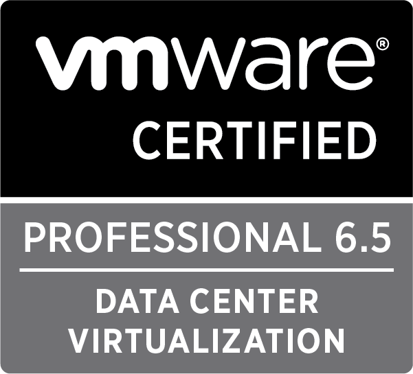

How to implement, manage, and troubleshoot a vSphere V6.5 infrastructure to provide a powerful, flexible, and secure foundation for business agility that can accelerate the transformation to cloud computing
ID: VMW-00588623Z-00082066

A quality-driven and cost-effective framework consisting of best practices and processes that can be adopted in order to provide an IT service management
ID: 1040878.1092211

Designing an Resilient, Fault-Tolerant, High-Performing, Secure Applications, Cost-Optimized Architectures and scalable distributed systems on AWS
ID: 10MGS2WCBMFE1NGV

A Scaled Agile Framework® (SAFe) member responsible for planning Program Increments and Iterations, breaking requirements into stories, developing incrementally with built-in quality, demonstrating value at a team and program level, and problem-solving impediments to drive relentless improvement and Extreme Programming (XP) in a SAFe environment
ID: 37204082-3286

Demonstrates the experiences, education, skill and competency required to lead and direct projects. With a standardized set of skills to undertake projects on system reorganizations, turn strategic vision into tangible goals, and ensure effective and agreed outcomes, while balancing various project constraints
ID: 7217226

Framework for enterprise architecture, an approach for designing, planning, implementing, and governing an enterprise information technology architecture that relies heavily on modularization, standardization, and already existing, proven technologies and products.
ID: 152450
VMware Certified Professional 6.5 - Data Center Virtualization (VCP6.5-DCV)
Information Technology Infrastructure Library v3/Edition 2011 (ITILV3)
AWS Certified Solutions Architect - Associate
SAFe 4 Practitioner (SP)
Project Management Professional (PMP)
The Open Group Architecture Framework v9 (TOGAF 9)
- Madhu Shankar Malode
- ⭐Tech for Good